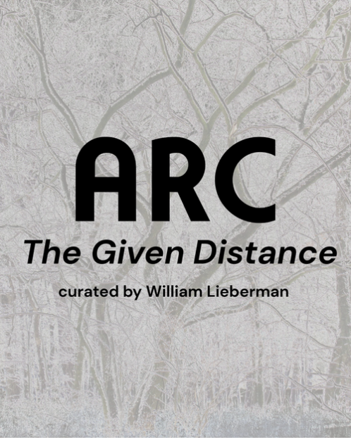

The Given Distance
The Given Distance
Curated by William Lieberman
The Given Distance is an exploration of the default condition or inherent barrier that artists face in fully communicating their internal experience to others. This exhibition points to the role of the artist, whose work attempts to bridge that distance.
This members’ exhibition brings together work by all artists of ARC Gallery, highlighting the range of voices, perspectives, and approaches that make up the gallery’s community. Working across diverse media and styles, ARC’s members present artworks that reflect their individual attempts to translate personal perception into visual form, collectively exploring the space between inner experience and shared understanding.
Exhibiting Member Artists: Kina Bagovska, Raissa Bailey, Nancy Bechtol*, Abigail Engstrand, Nancy Fritz, Stacey Lee Gee, Iris Goldstein, Jessica Gondeck, Cait Hardie, Diane Jurado, Elyse Martin, Ruti Modlin, Jasmine Percell, Cheri Reif Naselli, Randi Shepard, Lee Stanton, Jane Stevens, Michele Stutts, Michelle Williams, and Amy Zucker.
Exhibition dates: April 2 – May 1, 2026
Gallery hours: Thurs – Fri 2-6pm, Sat – Sun 12-4 pm *Passed Away